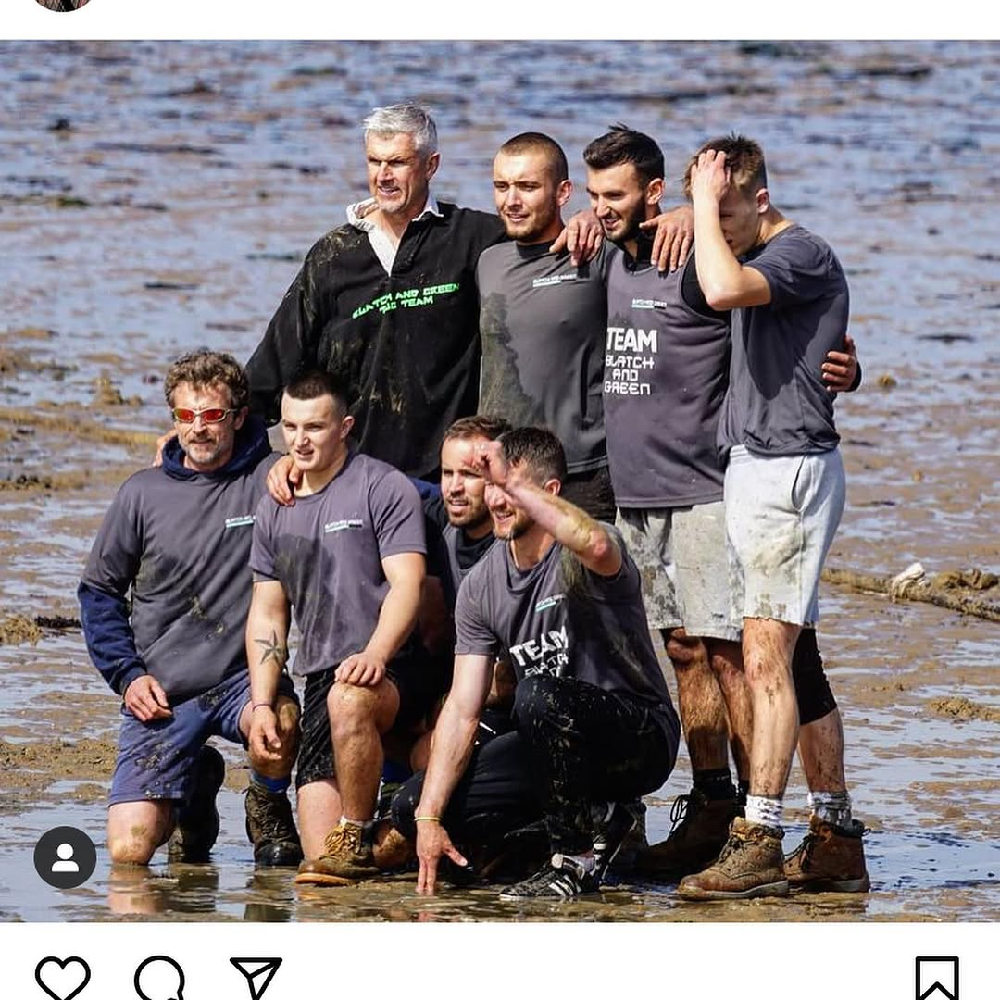

Four Decades.
One Standard.
Blatch & Green was founded in 1982 by Edward Blatch and James Green, two site managers who left a national contractor with a shared conviction: that private residential construction deserved the same rigour as the most demanding commercial projects.
Their first commission was a Victorian townhouse restoration in Kensington. It took eighteen months. The client recommended them to three others before it was finished. That pattern — work so good it requires no advertising — has defined the firm ever since.
Foundation
Edward Blatch and James Green establish the firm from a shared office in Guildford. First commission: a Grade II listed townhouse restoration in Kensington, W8.
Surrey Studio Opens
Growing demand from country house clients leads to the opening of a second studio dedicated to projects in Surrey, Sussex and the wider South East.
Second Generation
Tom Blatch and Sarah Green join the board, bringing architectural and engineering credentials. The firm undertakes its first net-zero new build.
Craftsmanship Charter
The firm formalises its quality standards in the Blatch & Green Craftsmanship Charter — a binding internal document governing material selection, tolerance levels and handover criteria for every commission.
Forty Years On
Blatch & Green remains privately held, client-referred and deliberately selective. A limited number of commissions, each receiving the full attention of the firm's leadership.
The people who carry the standard.

Rich Blatchford

Nick Green
Built from the ground up — in every sense.
Behind every Blatch & Green commission is a team that has come up through the trade. Site managers who have laid foundations. Project directors who have run programmes from groundbreak to handover. Craftsmen who understand that the difference between good and exceptional is measured in millimetres.
Our people combine formal construction qualifications with practical site knowledge accumulated over decades. Many have been with the firm for ten years or more. That continuity of expertise — passed between generations on the same projects, on the same sites — is not something you can manufacture. It is earned.
We are a team that works hard, takes pride in what we build, and holds ourselves to a standard that the people who live in our buildings will notice every day for the rest of their lives.

Team Blatch & Green